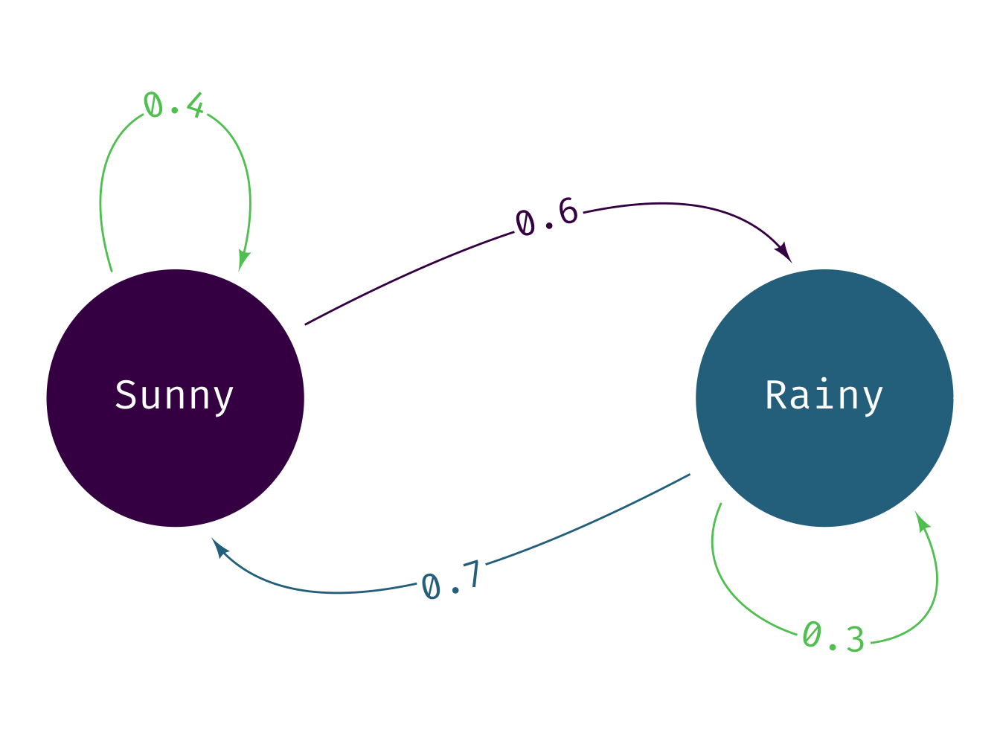
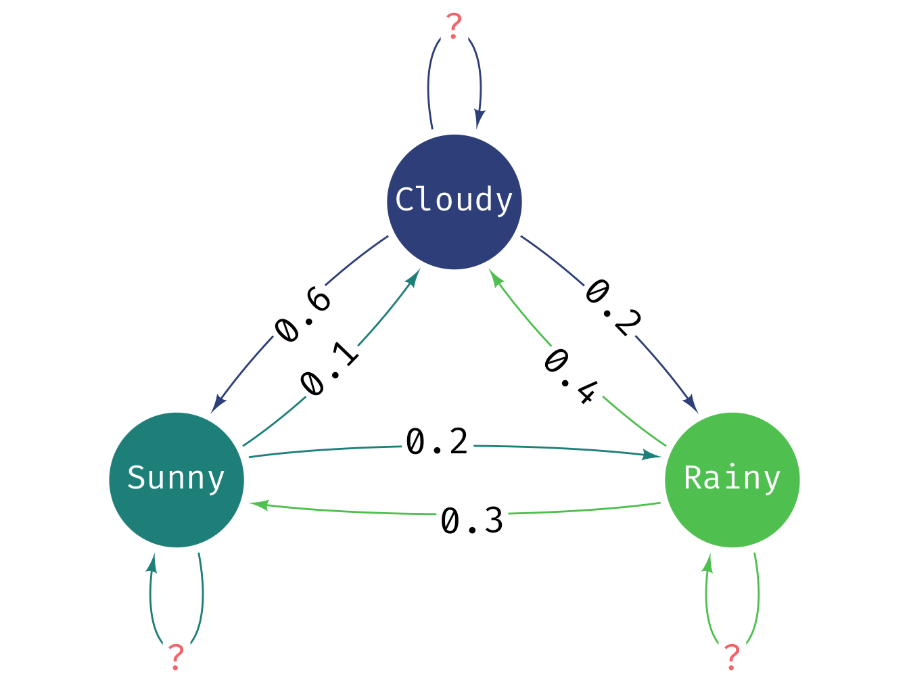

2 Markov Chains
We will now look at a Markov Chain. We have not covered it during lectures but based on the basic principles we have covered we will be able to use it for simulations.
Any random process is known to have the Markov property (a Markov process) if the probability of going to the next state depends only on the current state and not on the past states. A Markov process is memoryless property in that it does not store any property or memory of its past states.
If a Markov process operates within a specific (finite) set of states, it is called a Markov Chain.
A Markov Chain is defined by three properties:
A state space: a set of values or states in which a process could exist
A transition matrix: defines the probability of moving from one state to another state
A current state probability distribution: defines the probability of being in any one of the states at the start of the process
Consider the following example where we have two states describing the weather on any particular day: (i) Sunny and (ii) Rainy. Each arrow denotes the probability of going from one state to itself or another over the course of a day. For example, if it is currently sunny, the probability of it raining the next day is 0.6. Conversely, if it is raining, the probability that it will become sunny the next day is 0.7 and 0.3 that it will continue raining.

The transition matrix can be written as the following in R:
transitionMatrix = matrix(c(0.4, 0.6, 0.7, 0.3), nrow=2, ncol=2, byrow=TRUE)
print(transitionMatrix)#> [,1] [,2]
#> [1,] 0.4 0.6
#> [2,] 0.7 0.3which creates a 2 x 2 matrix consisting of the transition probabilities shown in the diagram.
Suppose I want to simulate a sequence of 30 days and the weather patterns over those days. Assuming that on day 0 it is currently sunny, I can do the following:
# initial state - it is [1] sunny or [2] rainy
state <- 1
weather_sequence <- rep(0, 30) # vector to store simulated values
for (day in 1:30) { # simulate for 30 days
pr <- transitionMatrix[state, ] # select the row of transition probabilities
# sample [1] or [2] based on the probs pr
state = sample(c(1, 2), size = 1, prob = pr)
weather_sequence[day] <- state # store the sampled state
}
# print the simulated weather sequence
print(weather_sequence)#> [1] 2 1 1 1 2 1 2 1 1 2 1 2 1 2 1 1 1 2 1 1 2 1 2 2 2 1 2 1
#> [29] 2 22.1 Exercise MC
Can you extend this example to a three-state model?

Note, the diagram (intentionally) misses out the self-transitions. You should be able to infer this because the probabilities given would otherwise not add up to one!
2.2 Function MC
We now move to another essential concept in programming - functions. You would have already encountered functions in R and other programming languages. Functions are a way to encapsulate code so that it can be reused. This is a key concept in programming and is used to make code more readable and maintainable.
A function is a piece of code which is encapsulated so then we can refer to it repeatedly via the name of the function rather than repeatedly writing those lines of code. If you would like to learn more about functions in R, you can read this tutorial or the software carpentry lesson.
Now let’s put the code we have created in this practical into a function that can take a general transition matrix for any number of states and run the markov chain simulation. The function should be named run_markov_chain and take three arguments:
-
transitionMatrix: a matrix of transition probabilities -
initialState: the starting state (an integer) -
numSteps: the number of steps to simulate
The function should then return a vector of simulated states as a vector. Once you have written the function, you can test it using the two-state weather model above and the three-state model. Also check that it works for a system with more states. Then also test that the function works for different initial states and number of steps. The final thing to test is if the output is a vector and has the correct length.